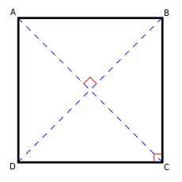
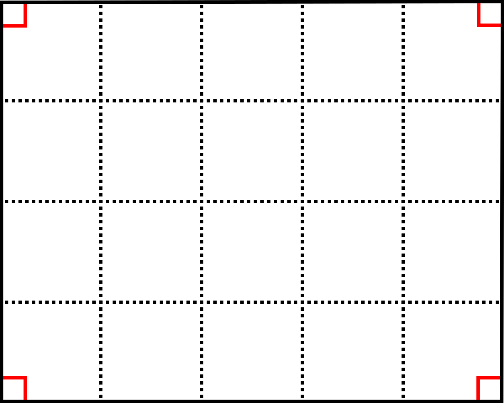

Figuri geometrice
Puncte, Drepte
-Un punct este un obiect idealizat (un concept) dintr-un spațiu dat. Un punct nu are nici lungime, nici arie, nici volum și nici un alt analog dimensional superior. Altfel spus, punctul este un obiect zerodimensional, cu măsura zero.
-Un segment de dreaptă este o porțiune dintr-o dreaptă, delimitată de două puncte, numite extremitățile (capetele) segmentului.
-O dreaptă este o figură geometrică ce are doar o dimensiune, lungimea. Orice dreaptă este de lungime infinită, conține o infinitate de puncte, este de grosime zero și este o curbă perfect "dreaptă".
Proprietăți
-Două puncte sunt coliniare dacă sunt situate pe aceiași dreaptă.-Două segmente sunt congruente dacă au aceiași lungime.
-Două drepte sunt concurente dacă se intersectează într-un punct.
-Două drepte sunt perpendiculare dacă formează un unghi drept.
-Două drepte sunt paralele dacă nu se intersectează în niciun punct.
Triunghi

-Triunghiul este figura geometrică formată din 3 laturi concurente.
Proprietăți
-Un triunghi este dreptunghic dacă unul dintre unghiurile sale este de 90°. Latura opusă acelui unghi se numește ipotenuză, iar celelalte sunt catete.-Un triunghi este isoscel dacă are două laturi egale.
-Un triunghi este dreptunghic isoscel dacă are doua laturi egale și un unghi de 90°.
-Un triunghi este echilateral dacă are toate laturile egale.
--Un triunghi echilateral are toate unghiurile egale cu 60°.
-Un punct care se află pe o latură a tringhiului la distanță egală de cele doua puncte ale laturii se numește mijloc.
-O dreaptă formată dintr-un punct al tringhiului într-un punct de mijloc de pe latura formată de celelalte două puncte ale triunghiului se numește mediană.
-O dreaptă formată dintr-un punct al tringhiului într-un punct de pe latura formată de celelalte două puncte ale triunghiului care formează un unghi de 90° se numește înălțime.
-O dreaptă se numește mediatoare dacă e mediană și înălțime.
-O dreaptă formată dintr-un punct al tringhiului într-un punct de pe latura formată de celelalte două puncte ale triunghiului care împarte unghiul în jumătăți egale se numește bisectoare.
Aria
-Aria unui triunghi oarecare este egală cu:
--(Bază ⋅ Înălțime)/2.
--√[p⋅(p-a)⋅(p-b)⋅(p-c)], unde cu p e notat semiperimetrul.
--[l1*l2*sin(l1l2)]/2, unde l1 și l2 sunt laturi oarecare.
-Aria unui triunghi dreptunghic este egală cu (c1 ⋅ c2)/2, unde cu c1 și c2 s-au notat catetele.
-Aria unui triunghi echilateral este egală cu l²√3/4.
Teoreme
Teorema lui Pitagora
-Într-un triunghi dreptunghic, suma pătratelor catatelor este egală cu pătratul ipotenuzei.
Teorema Sinusurilor
-Într-un triunghi oarecare, rapoartele dintre o latura și sinusul unghiului la care i se opune sunt egale.
Teorema Cosinusurilor
-Într-un triunghi oarecare, patratul unei laturi este egal cu suma pătratelor celorlalte două laturi fără dublu produs dintre cele două laturi cu cosinusul unghiului la care i se opune.
Pătrat
-Pătratul este figura geometrică formată din 4 laturi concurente egale.
Proprietăți
-Fiecare unghi format de două laturi ale pătratului este de 90°.-Laturile opuse sunt paralele.
-Laturile alăturate sunt perpendiculare.
-Toate laturile sunt congruente două câte două.
-O diagonală este latura√2.
-Diagonalele sunt congruente și perpendiculare, intersectându-se în centrul pătratului, care este punctul lor de mijloc.
-Perimetrul este egal cu 4 ⋅ l, cu l latură.
-Aria este latura²/2.
Dreptunghi
-Dreptunghiul este figura geometrică formată din 4 laturi concurente, cu două laturi egale mai lungi care determină lungimea și două laturi egale mai scurte care determină lățimea.
Proprietăți
-Laturile opuse sunt paralele și congruente.-Diagonalele sunt congruente;.
-Unghiurile sunt congruente și au măsura de 90°.
-Perimetrul dreptunghiului este egal cu dublul sumei dintre lungime și lățime: P = 2 ⋅ ( L + l ).
-Aria este egală cu produsul dintre lungime și lățime: A = L ⋅ l.
-Pătratul reprezintă un caz particular de dreptunghi, în care lungimea și lățimea sunt egale.
Trapez

-Trapezul este figura geometrică formată din 4 laturi concurente, cu două laturi paralele, numite bază mică și bază mare după lungimea lor, și alte două neparalele.
Proprietăți
-Un trapez este dreptunghic dacă o latură neparalelă este perpendiculară pe cele două baze.-Un trapez este isoscel dacă cele două laturi neparalele sunt egale.
-Aria trapezului este h ⋅ m, unde h este înălțimea, iar m este media aritmetică a bazelor.
-Dacă într-un trapez unghiurile alăturate unei baze sunt congruente atunci trapezul este isoscel.
-Dacă într-un trapez diagonalele sunt congruente atunci trapezul este isoscel.
-într-un trapez isocel:
--Unghiurile alăturate unei baze sunt congruente.
--Unghiurile opuse sunt suplementare.
--Diagonalele sunt congruente.
Cerc

-Cercul este figura geometrică care reprezintă mulțimea tuturor punctelor din plan, egal depărtate de un punct fix numit centru. Distanța comună este denumită de obicei raza cercului.
Proprietăți
-O rază este un segment de dreaptă care conectează centrul unui cerc cu orice punct de pe acesta. Lungimea acestuia se notează de obicei cu "r" sau "R".-Un diametru este o coardă care trece prin centrul cercului. Diametrul este compus din două raze coliniare, lungimea sa fiind de 2r.
-Un disc este regiunea planului delimitată de un cerc (aflată în interiorul acestuia).
-Un arc de cerc este o porțiune dintr-un cerc delimitată de două puncte.
-Lungimea cercului este 2π ⋅ r, unde π este o constantă matematică (~3,14).
-Aria cercului este π ⋅ r².
-Lungimea unui arc de cerc este (π ⋅ r ⋅ n)/180, unde n este măsura unghiului sectorului.